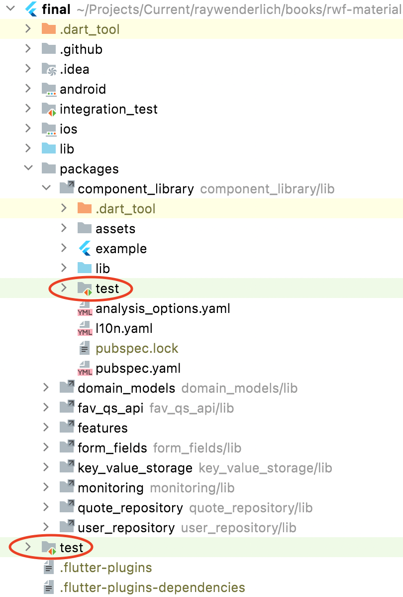
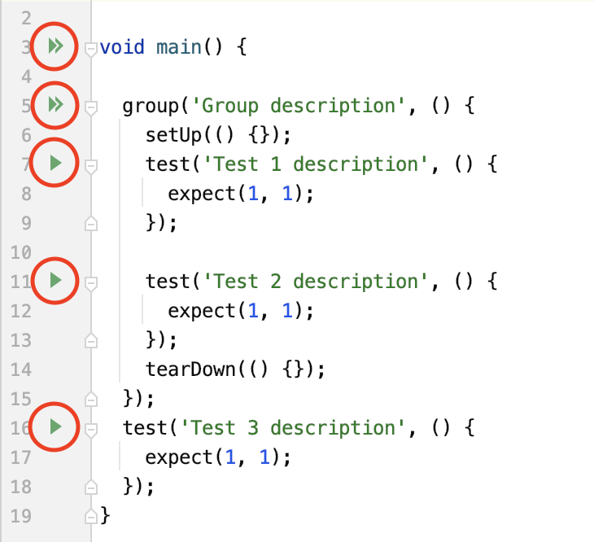
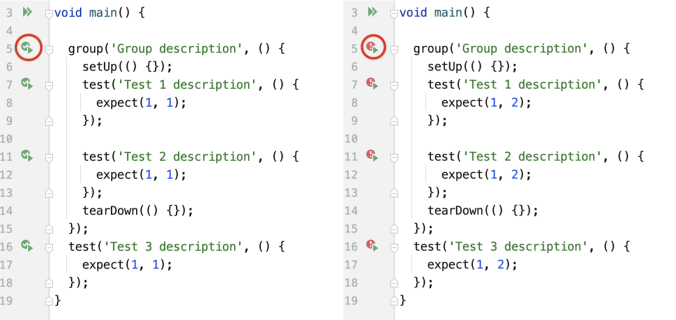

14 Automated Testing¶
In the previous chapter, you learned how to use Firebase Crashlytics to efficiently track errors in your app. This knowledge plays an enormous role when resolving the existing issues your users face. However, the experience for your users would be even better if the app didn’t have those issues in the first place. It’s delusional to believe your app will be bug-free with your first release, but you still try to get as close to this ideal scenario as possible. You can achieve this with the help of testing.
Your QA team — or you and your fellow developers, if you work in a smaller team — can only do so much to test your app manually. That’s where automated testing can be a handy approach to make your work easier.
Besides being very limited with how much manual work you can perform — which relates directly to cost — performing automated tests also has other benefits. As people make mistakes, automated tests exclude the human error factor from app testing. With automated testing, you can get rid of repetitive work, perform the test with greater speed and consistency and test more frequently. All of these benefits result in a faster time to market.
Despite giving the impression that automated testing is this magical thing that will save you from all of the world’s problems, in some cases, manual testing is actually better. You should choose manual testing over automated testing in instances when test criteria are constantly changing, cases that aren’t routine and generally in situations when manual tests haven’t been executed yet.
You can use a few different types of automated tests for different parts of your app. To ensure that your app is well-tested, you have to provide high test coverage. This is the percentage of your app’s executed code covered by automated tests. In other words, an app with high test coverage is less likely to run into undetected bugs.
In this chapter, you’ll learn about:
- Unit tests.
- Widget tests.
- Integration tests.
- Using mocking and stubbing.
- Writing and executing examples of each test type.
Throughout this chapter, you’ll work on the starter project from this chapter’s assetsfolder.
Note
If you’re having trouble running the app or the tests, you might have forgotten to propagate the configurations you did in the first chapter’s starter project to the following chapters’ materials. If that’s the case, please revisit Chapter 1, “Setting up Your Environment”.
Types of Tests¶
As already mentioned, there are quite a few different types of automation tests. In this chapter, you’ll mainly deal with three test types — unit tests, widget tests and integration tests. You’ll get deeper into those in just a moment.
For general knowledge purposes, it’s also worth mentioning some other types, though they’re not as important in testing mobile apps. They are:
- Smoke testing, also known as confidence testing, is a set of tests designed to assess the stability of a deployed build.
- Golden file testing is a special type of testing in which you compare specific behavior to the golden file. In the case of API testing, this golden file can be the response you expect from the API. On the other hand, when testing your mobile app’s UI, the golden file would be the screenshot of the UI you expect to see on your mobile device.
- Performance testing tests the software’s speed, responsiveness and stability under the workload.
Unit Testing¶
Unit testing ensures that a specific unit of software behaves as intended. The term “unit” isn’t very clearly defined. It can be a complete chunk of the software but usually represents a smaller part of code, like a function or class.
By writing unit tests for smaller units and later combining them, you can gradually provide high test coverage for very complex applications.
The unit test’s purpose is to ensure the correct behavior of more primitive isolated units. To imitate interactions of this specific unit with other parts of software, mocksand stubs are often used — but more on that later. The biggest advantage of the unit test is that it can detect issues very early in the development cycle. These issues can be bugs caused by wrong implementations or flaws in the design of a specific unit. When writing unit tests, you’re often more conscious of the inputs the specific unit receives, the outputs it returns and the error conditions the unit might run into.
On the other hand, unit testing can only catch the errors that might happen in the scope of this specific unit. Therefore, you should always perform unit tests in parallel with other test types, such as widget tests.
Before diving deep into the next type of test, look at two already mentioned concepts that have a significant role in unit testing — mocking and stubbing.
Mocking and Stubbing¶
When performing unit tests, you must focus on the pure functionality of a specific unit. This means you should try to prevent any uncontrolled influence of other internal or external units/services with which your unit interacts. This is where you’ll use mocking and stubbing.
Mocking is the process in which you create a fake version of an internal or external service. During the process of testing, it replaces the actual service.
The purpose of stubbing is very similar to the purpose of mocking, which is why people usually have a hard time distinguishing between them. Stubbing — like mocking — creates a stand-in but only simulates a behavior rather than the whole object or service.
When you’re testing your Flutter apps, you’ll use a few different libraries for mocking and stubbing, which will make the process of testing easier.
Widget Testing¶
Widget testing is a special term used specifically in testing Flutter apps. The general developer community usually refers to them as component testing.
As you’ve probably already figured out, widget testing ensures that a specific widget or portion of the user interface looks and works as intended without needing a physical device or simulator. This last advantage results in low execution time, allowing you to perform hundreds of tests per minute.
The principles you’ll learn about widget testing can also apply to integration testing.
Integration Testing¶
If you jump back to the section on unit testing, there was one disadvantage mentioned at the end of the section. This is where integration testing saves the day. Integration testing is a process in which you test interactions among different units and components — in this case, widgets.
It’s usually performed after unit and widget testing, as it doesn’t work well for detecting issues happening inside a specific unit or component. Nevertheless, it plays a crucial role when providing high test coverage for your project.
To perform integration tests, you’d use different integration-testing tools. You might be aware of one such tool — Selenium. Selenium is an open-source program that facilitates automation testing for web-based applications. You might remember YouTube videos on web scraping that were quite popular in the past. Although this isn’t its sole purpose, you can get a good idea of what such a program does. With the help of Selenium, the web scraping program navigated through pages of a specific website and eventually got to the point where it took specific data from the site and stored it in the database.
Integration testing isn’t much different from this. You use integration-testing software to execute interactions with the different units and eventually compare the output with your expected result. In Flutter integration testing, you won’t use any third-party software, as Flutter SDK has you covered.
In addition to integration-testing tools, you’ll also use mocks and stubs when performing integration tests.
Writing Tests for Flutter Apps¶
Open the starter project in your preferred IDE. If you quickly run through the folder structure of either the Flutter app or package, you may notice the folder called test. This is where your tests will live:

In the image above, you can see test folders for your WonderWords app and component_library internal package. Expand the other packages folder, and you’ll see that it also contains a test folder.
Next, open example_test.dart located in the root-level test folder, and look at the example implementation of very basic tests:
import 'package:flutter_test/flutter_test.dart';
// 1
void main() {
// 2
group('Group description', () {
// 3
setUp(() {});
// 4
test('Test 1 description', () {
// 5
expect(1, 1);
});
test('Test 2 description', () {
expect(1, 1);
});
// 6
tearDown(() {});
});
// 7
test('Test 3 description', () {
expect(1, 1);
});
}
Here’s what the code above does:
- This is the entry point of your test program. Your code for performing tests will live inside the
main()function. - With a group, you can join multiple tests together. It takes two required parameters — description, which will be included in descriptions of the tests inside the group, and function parameter, inside which you’ll define your tests.
setUp()is used as a part of code, which will always run before the tests.- This is a top-level test function in which you’ll write an implementation of a specific test.
- This function compares your test result with your expected value and checks if the test was successful.
tearDown()works very similarly to thesetUp()function, but this function executes code after tests.- This is the same function as
test()after comment// 4but is outside the group, which shows thattest()can run outside the group.
Running Flutter Tests¶
You can run your tests in multiple different ways. Here, you’ll explore using both your IDE and your terminal to run your tests.
When looking at your file editor, notice the green arrows along the left side of your code. One is parallel to the implementation of the main() function, one is parallel to the group() function and one is parallel to the test() function:

In the image above, you can see what the interface will look like in Android Studio. If you open the same file in Visual Studio Code, the logic behind testing is very similar.
To test this, click the double arrow next to the main() function, and all the tests inside it should be executed. The same goes for running the group() function. You can also run an individual test by clicking the green arrow next to that test.
After tests run — either successfully or unsuccessfully — the design of the arrows changes slightly, and the console shows the test results:

The left image shows the tests that ran successfully, and the right image shows tests that failed.
To better understand why the tests fail, you have to look at the console:

On the left side of the image above, you see that all the tests failed. You’ll check the right side of the console to see what went wrong. While the expected value was 2, the actual result was 1. Return to the previous picture, and you’ll see that, for the sake of example, the values expect(1, 2) function was changed.
On the other hand, you can also run tests in the terminal. Navigate to the root of the package for which you want to run the test, and use the following command to run all the tests in a specific file:
flutter test test/example_test.dart
If you want to run only a specific test or group of tests, use an additional flag --plain-name with the description of the group or test. For your example of a group with the description “Group description”:
flutter test --plain-name "Group description" test/example_test.dart
Note
The command above won’t work if you try to run it outside the package you want to test. This is because all the important packages you use for testing are added as dev dependencies. So, it means they won’t be fetched in the app that uses these packages.
Now, you’re ready to write your first actual tests.
Writing Unit Tests¶
If you think about the past chapters, you’ve learned about repositories, mappers, remote APIs, BLoC business logic, etc. In the following sections, you’ll learn how to write unit tests for all these components.
Writing Unit Tests for Mappers¶
Before you start writing the code, it’s worth visualizing what you want to achieve with it. In the first test, you’ll create a test for a mapper that maps DarkModePreferenceCMinto DarkModePreference. So, from the extension that defines this mapper, you’d expect that in the case of DarkModePreferenceCM.alwaysDark, it would return DarkModePreference.alwaysDark. This is exactly what you’ll write in your first test.
Open mappers_test.dart located at packages/user_repository/test. In it, replace // TODO: add unit test for DarkModePreferenceCM to domain mapper with the following code snippet:
//1
test('When mapping DarkModePreferenceCM.alwaysDark to domain, return DarkModePreference.alwaysDark',
() {
//2
final preference = DarkModePreferenceCM.alwaysDark;
//3
expect(preference.toDomainModel(), DarkModePreference.alwaysDark);
});
This is a very simple example of a unit test but is a great example to get started. Here’s what the code above does:
- As already mentioned, this is the top-level function that will execute when you run the test. As the first required parameter, it takes the description of the test, and the second required attribute takes an implementation of the test.
- Here, you store the instance of
DarkModePreferenceCMin a variable. - Here, you compare the output of the testing mapper with your expected result.
Before running this test, you only have one thing left to do — add the missing imports by replacing // TODO: add missing imports with the following code:
import 'package:domain_models/domain_models.dart';
import 'package:key_value_storage/key_value_storage.dart';
import 'package:test/test.dart';
import 'package:user_repository/src/mappers/mappers.dart';
Now, you’re ready to run the tests and check if your implementation of DarkModePreferenceCMToDomain mapper is correct. Use one of the previously explained methods to run the tests. By running it in the terminal, this is the output:
00:01 +1: All tests passed!
Congratulations, you’ve written your first unit test!
Writing a Unit Test for Your Repository¶
Next, you’ll write a test for your UserRepository focusing on only one function — getUserToken(). Think of the situation when the previously mentioned function will be invoked, when a successful authentication happened sometime in the past, and the token was saved in the secure storage. In this case, you’d expect from the function that it returns a valid token.
Start by opening user_repository_test.dart located in the packages/user_repository/test. Replace // TODO: add an implementation for UserRepository.getUserToken() test with the following code snippet:
test('When calling getUserToken after successful authentication, return authentication token',
() async {
// TODO: add initialization of _userRepository
expect(await _userRepository.getUserToken(), 'token');
});
The code above is a standard skeleton for performing automated tests in Flutter with the already completed expect() function with the logic from before. For now, ignore the missing imports — you’ll add them later — and focus on the instance _userRepository of UserRepository, which has yet to be initialized. To do so, replace // TODO: add initialization of _userRepository with the following:
// TODO: add initialization of _userSecureStorage
final _userRepository = UserRepository(
secureStorage: _userSecureStorage,
noSqlStorage: KeyValueStorage(),
remoteApi: FavQsApi(
userTokenSupplier: () => Future.value(),
),
);
// TODO: add stubbing for fetching token from secure storage
UserRepository‘s constructor requires two parameters — noSqlStorage and remoteApi. These don’t play any role when executing getUserToken(). But if you go to the implementation of this class, you’ll see that you can also provide the secureStorage attribute when testing this repository. This one, on the other hand, plays a huge role when executing getUserToken(). As mentioned before, it’s crucial when performing unit tests to prevent any unexpected behavior of other units with which the testing component interacts. To take control over the behavior of this object, you’ll make a mock for UserSecureStorage.
To make things easier, you’ll use the Flutter community library mockito. First, add the library to the pubspec.yaml file of the user_repository package by replacing # TODO: add mockito library with the following code:
mockito: ^5.2.0
Make sure to use correct indentation, and don’t forget to fetch packages by running the flutter pub get command in the root of the current package. Next, replace // TODO: add missing packages and an annotation to generate the mock with the following code:
import 'package:fav_qs_api/fav_qs_api.dart';
import 'package:key_value_storage/key_value_storage.dart';
import 'package:mockito/annotations.dart';
import 'package:mockito/mockito.dart';
import 'package:test/test.dart';
import 'package:user_repository/src/user_secure_storage.dart';
import 'package:user_repository/user_repository.dart';
// TODO: add missing import
@GenerateMocks([UserSecureStorage])
You can generate a mock class for UserSecureStorage with the annotation you just added. For now, ignore the unnecessary import that was added among other imports — you’ll need it in just a moment. Run the following command in the terminal under package/user_repository directory to generate a mock class:
flutter pub run build_runner build --delete-conflicting-outputs
You may notice that a new file was generated in the same folder where your current file is located. This is where the definition of your mock test was generated. Now, you have to initialize the missing variable by replacing // TODO: add initialization of _userSecureStorage with the following line of code:
final _userSecureStorage = MockUserSecureStorage();
Don’t forget to add the missing import by replacing // TODO: add missing importwith:
import 'user_repository_test.mocks.dart';
If you look at the code you just wrote, it looks like it might be ready to perform a test. Run the test in the terminal, and you’ll quickly notice that something went wrong with the following output:
00:01 +0 -1: When calling getUserToken after successful authentication, return authentication token[E]
MissingStubError: 'getUserToken'
No stub was found which matches the arguments of this method call: getUserToken()
...
00:01 +0 -1: Some tests failed.
From the output above, you can see that you forgot to implement stubbing of specific behavior. So, when your mock object executes getUserToken() on secure storage, you have to stub a behavior in which the token is returned. You can achieve this by replacing // TODO: add stubbing for fetching token from secure storage with the following line of code:
when(_userSecureStorage.getUserToken()).thenAnswer((_) async => 'token');
The function you just wrote is quite intuitive. When you call getUserToken() inside your mock object, it returns the token you hardcoded to token. Run the test again, and it’ll work like a charm.
Writing a Unit Test for API¶
In the following section, you’ll write a unit test for your signIn() function for FavQsApi. Imagine the most common scenario when the user enters the correct credentials, and the remote API returns the correct response. In this case, you expect signIn() to return an instance of the UserRM object. Again, you’ll have to stub the behavior of the remote API returning a success response. You could use the mockitopackage for mocking again, but this is a bit tricky when performing HTTP requests with the help of the dio package. Therefore, you’ll use the http_mock_adapter package, which makes things easier for you. First, replace # TODO add http_mock_adapter, located in packages/fav_qs_api/pubspec.yaml, with the following line, and fetch the missing packages:
http_mock_adapter: ^0.3.3
Don’t forget to run flutter pub get in the terminal inside the fav_qs_api package or make get at the root of the project. Next, navigate to sign_in_test.dart located in the packages’ test folder, where a few things have been prepared for you in advance.
import 'package:dio/dio.dart';
import 'package:fav_qs_api/src/fav_qs_api.dart';
import 'package:fav_qs_api/src/models/models.dart';
import 'package:fav_qs_api/src/url_builder.dart';
// TODO: add missing import
import 'package:test/test.dart';
void main() {
test(
'When sign in call completes successfully, returns an instance of UserRM',
() async {
// 1
final dio = Dio(BaseOptions());
// TODO: add dioAdapter which will stub the expected response of remote API
// 2
final remoteApi =
FavQsApi(userTokenSupplier: () => Future.value(), dio: dio);
// 3
const email = 'email';
const password = 'password';
final url = const UrlBuilder().buildSignInUrl();
final requestJsonBody = const SignInRequestRM(
credentials: UserCredentialsRM(
email: email,
password: password,
),
).toJson();
// TODO: add an implementation of request stubbing
// 4
expect(await remoteApi.signIn(email, password), isA<UserRM>());
});
}
This is what the code above does:
- Initializes an instance of the
Dioobject, which is required to perform HTTP requests. - Initializes the remote API and provides the required testing attributes.
- Initializes all the required variables, which are used when performing the sign-in request.
- Evaluates if the tested function returns the correct output.
Next, replace // TODO: add dioAdapter which will stub the expected response of remote API with:
final dioAdapter = DioAdapter(dio: dio);
And // TODO: add missing import with:
import 'package:http_mock_adapter/http_mock_adapter.dart';
This initializes the DioAdapter object, which will be used later to stub the behavior of a successful response. Finally, replace // TODO: add an implementation of request stubbing with the following code snippet:
dioAdapter.onPost(
url,
(server) => server.reply(
200,
{"User-Token": "token", "login": "login", "email": "email"},
delay: const Duration(seconds: 1),
),
data: requestJsonBody,
);
The implementation of the code above is again quite intuitive. When performing the POST request using prespecified parameters, after a one-second delay, dioAdapterwill stub — imitate the successful response. Check the FavQs API under the “Create session” section, and you may see that the response body of the stubbed response perfectly matches the response body of the API definition. The only thing left is to run the test.
Again, as expected, everything worked fine:
00:02 +0: Sign in: When sign in call completes successfully, returns an instance of UserRM
*** Request ***
uri: https://favqs.com/api/session
method: POST
responseType: ResponseType.json
followRedirects: true
connectTimeout: 0
sendTimeout: 0
receiveTimeout: 0
receiveDataWhenStatusError: true
extra: {}
headers:
Authorization: Token token=
content-type: application/json; charset=utf-8
*** Response ***
uri: https://favqs.com/api/session
statusCode: 200
headers:
content-type: application/json; charset=utf-8
00:02 +1: All tests passed!
This is how the output looks. Notice that it’s a bit different from previous outputs. Additionally, it prints out the log for Request.
Writing a BLoC Unit Test¶
The final unit test you’ll write in this chapter is the BLoC test. It’s very important to also test your business logic. Again, there’s a very useful library that makes testing BLoC business logic much easier: the bloc_test library. The package is already added to the pubspec.yaml folder of the sign_in package located in the packages/featuresfolder. Now, open sign_in_cubit_test.dart, located in the packages’ test folder. In it, replace // TODO: add an implementation of BLoC test with the following code snippet:
blocTest<SignInCubit, SignInState>(
'Emits SignInState with unvalidated email when email is changed for the first time',
// 1
build: () => SignInCubit(userRepository: MockUserRepository()),
// 2
act: (cubit) => cubit.onEmailChanged('email@gmail.com'),
// 3
expect: () => <SignInState>[
const SignInState(
email: Email.unvalidated(
'email@gmail.com',
))
],
);
Here’s what’s going on in the blocTest function:
- Initialize the
SignInCubitobject. - Act on the cubit. This is what happens when the user enters the email address in the text field.
- Evaluate the new state and compare it with your expected result.
Next, replace // TODO: add missing imports and a mock class for UserRepository with the following line of code. This creates a mock for UserRepository:
import 'package:bloc_test/bloc_test.dart';
import 'package:form_fields/form_fields.dart';
import 'package:mockito/mockito.dart';
import 'package:sign_in/src/sign_in_cubit.dart';
import 'package:user_repository/user_repository.dart';
class MockUserRepository extends Mock implements UserRepository {}
The last thing you have to do is run the test and check if it works correctly.
Writing a Widget Test¶
In the following section, you’ll write a widget test. To perform it, you’ll use the widgetTest() function, which is also implemented as a part of the flutter_testpackage. You’ll start with the implementation of the widget test. You’ll test if the FavoriteIconButton recognizes the onTap gesture. Open favorite_icon_button_widget_test.dart, located in the test folder of the same package component_library. In it, replace // TODO: add an implementation of widgetTest with the following code:
testWidgets('onTap() callback is executed when tapping on button',
(tester) async {
// 1
bool value = false;
// 2
await tester.pumpWidget(MaterialApp(
locale: const Locale('en'),
localizationsDelegates: const [ComponentLibraryLocalizations.delegate],
home: Scaffold(
body: FavoriteIconButton(
isFavorite: false,
// 3
onTap: () {
value = !value;
}),
),
));
// 4
await tester.tap(find.byType(FavoriteIconButton));
// 5
expect(value, true);
});
Here’s what’s going on in the code above:
- The variable that will be manipulated on the tap gesture is initialized.
- The
pumpWidgetfunction helps build the widget. Notice that the function it tests is wrapped in a few additional widgets. This is required for multiple reasons, one being that you’re using internationalization insideFavoriteIconButton. - You define the action triggered on tap.
- In this step, the button is being pressed. Notice the parameter provided inside the
tap()function. You have to tell which widget has to be tapped. You can achieve that by searching for the correct type of widget through the widget tree. The other option would be adding a key attribute to theFavoriteIconButtonwidget and searching by key. There are multiple different ways of searching the widget. - You evaluate if the test was successful by comparing the value of
valuethat changed with the tap gesture with the expected value.
After running the just-implemented test, you can see that the widget was correctly implemented.
Writing an Integration Test¶
There’s only one more test type that you should write to make sure that your app potentially runs without bugs — the integration test. This test is a bit different from the ones you’ve run so far, as it requires a physical device or emulator to execute. For performing integration tests for a Flutter app, you need the integration_test package.
First, open the pubspec.yaml file located at the root of the project, and replace # TODO: add missing package with the following code snippet:
integration_test:
sdk: flutter
Don’t forget to fetch missing dependencies. Here, you’ll test the flow from starting the app, entering the search key “life” into the search field and checking if any results are returned for this search key.
Note
There might be situations when this integration test fails because you won’t mock the remote API. Such instances might be when your device or emulator isn’t connected to the internet or if something’s wrong with the remote API. This is the decision you’ll make in this specific example. As this is only an example test implementing stubbing for requests would take the focus of the topic. Feel free to test your knowledge by adding mocking for remote API, as shown in the Writing a Unit Test for API section.
Next, open app_test located in the integration_test folder at the root of the project. Before continuing to the integration test’s implementation, add the required import for this test by replacing // TODO: add missing package with the following line of code:
import 'package:integration_test/integration_test.dart';
Replace // TODO: add an implementation of integration test with the following code:
// 1
IntegrationTestWidgetsFlutterBinding.ensureInitialized();
testWidgets('search for life quotes', (tester) async {
// 2
app.main();
// 3
await tester.pumpAndSettle(const Duration(seconds: 1));
// 4
final searchBarFinder = find.byType(SearchBar);
// 5
expect(searchBarFinder, findsOneWidget);
// 6
await tester.enterText(searchBarFinder, 'life');
// 7
await tester.pumpAndSettle();
// 8
expect(find.byType(QuoteCard), findsWidgets);
});
Here’s what this code does:
- Enables executing tests on a physical device.
- Runs the app.
- Rebuilds the frames every second as long as their frames are scheduled.
- Searches for the
SearchBarwith the help of searching by type. - Evaluates that exactly one
SearchBarwidget is present on the screen. Look at the UI design of the app — this is what the app should look like. - Enters the search key “life” into the text field of the
SearchBarwidget. - Again, rebuilds the frames until the new quote list is loaded.
- Checks that your request was successful by making sure that the UI returns widgets
QuoteCard. If that request fails, noQuoteCardwidgets will be available on the screen.
Before running the test, make sure to run the app as you normally would. Doing so will ensure that all the packages are fetched, all pods are installed, etc. Because you aren’t stubbing the API requests in this specific example, run it using the following command — just make sure to replace YOUR_TOKEN in the command with the token you registered for the FavQs API:
flutter test integration_test/app_test.dart --dart-define=fav-qs-app-token=YOUR_TOKEN
When you run the test, you’ll notice that the app automatically starts on your connected device or emulator, performs all the previously mentioned steps, and successfully exits.
Challenges¶
To test your understanding of the topic, try to write a few automated tests on your own. There are a few examples ready for you:
- Write a unit test for mapper defined by the extension
DarkModePreferenceDomainToCM— for example, ofDarkModePreference.alwaysDark. - Write a unit test for
UserRepository‘sgetUserToken()function — for instance, when the user isn’t authenticated yet. - Write a unit test for
FavQsApi’ssignInfunction — for instance, when a user enters incorrect credentials. - Write a widget test to check if
FavoriteIconButtonreally showsIcons.favorite_border_outlinedwhen theisFavoriteis set tofalse.
Try to optimize the examples by joining them into groups with already existing tests. If you get stuck, check the solution in the Challenge project.
Key Points¶
- Automation testing is a crucial part of software development, as it helps you provide a bugless app to your users.
- A well-tested app has high test coverage.
- Three types of tests are important when testing a Flutter app — unit tests, widget tests and integration tests.
- Unit tests are mainly used to test smaller chunks of code, such as functions or objects.
- Widget tests, also known as component tests, are used to test the behavior and appearance of a single widget or tree of widgets.
- Integration tests play a significant role when testing interactions among different widgets and units.